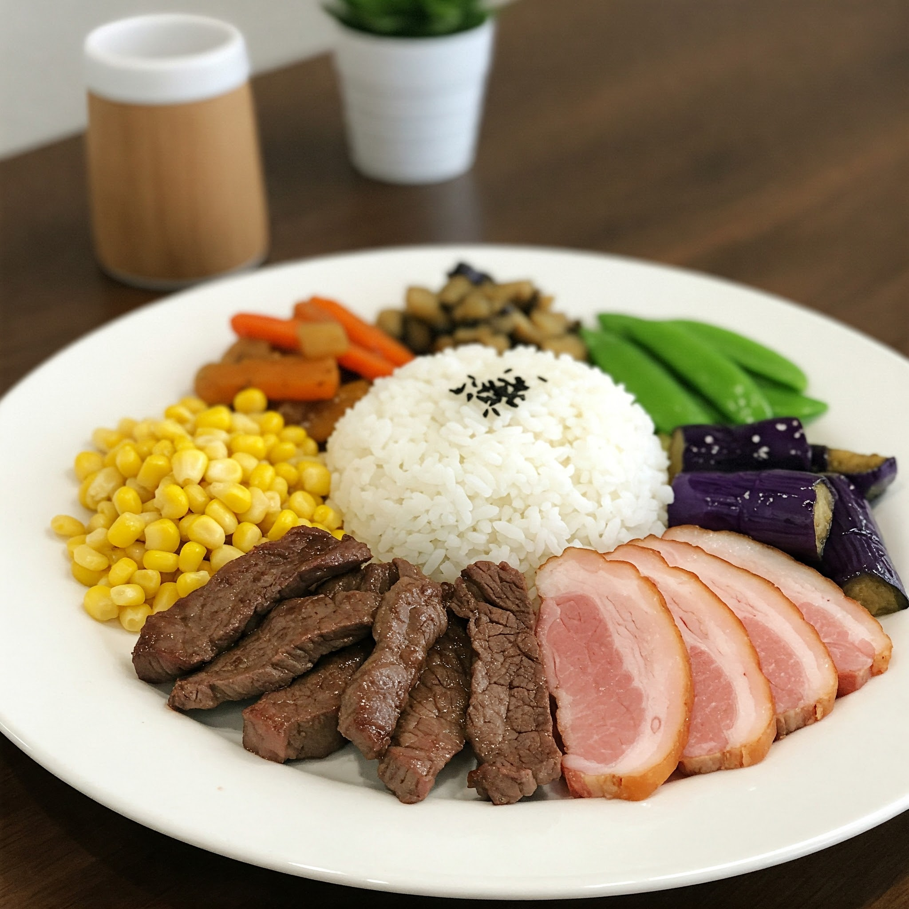
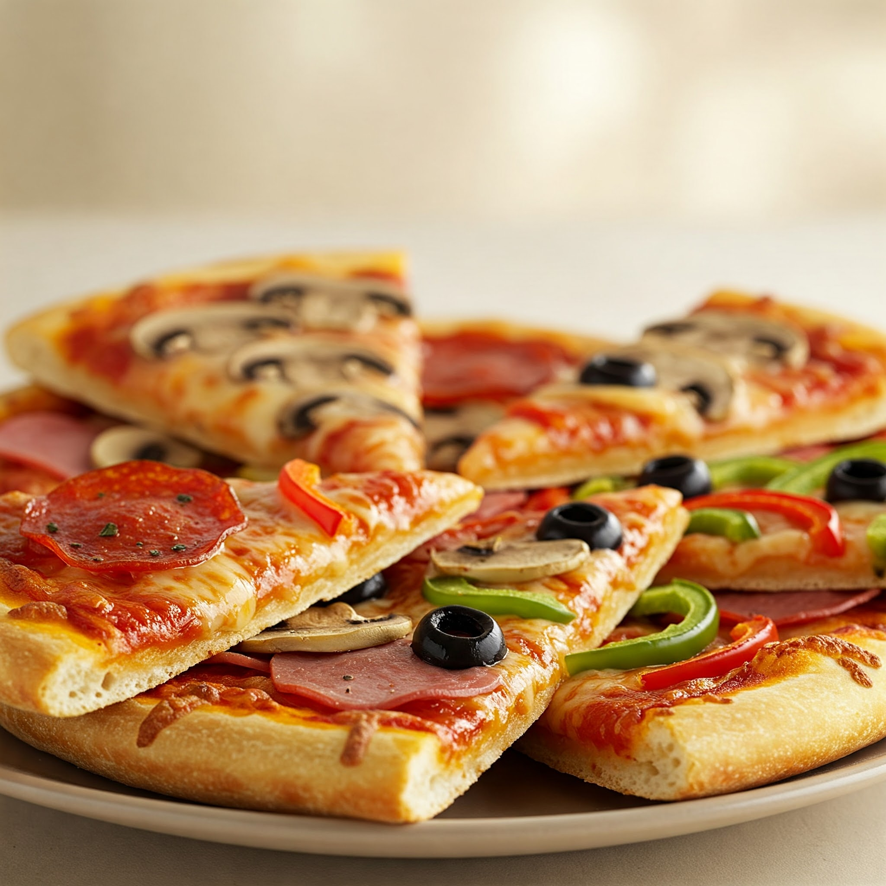
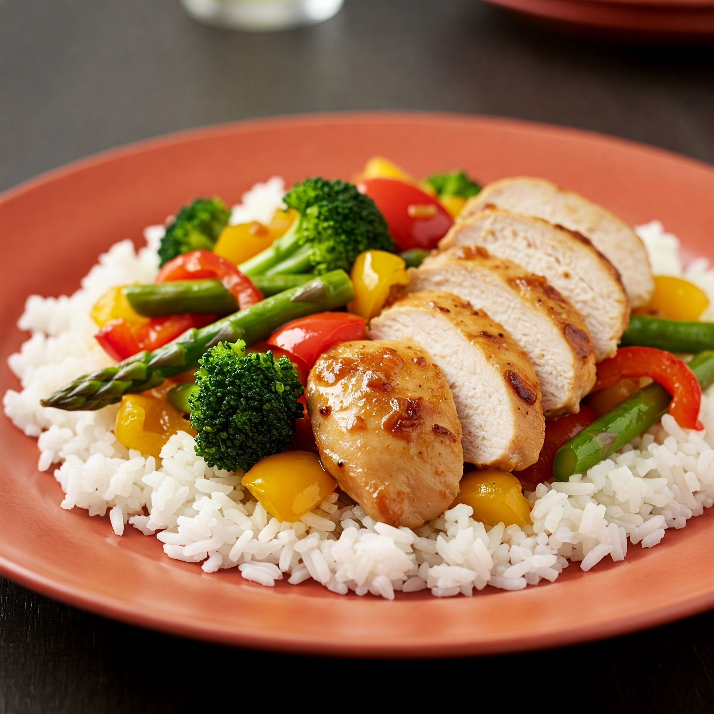
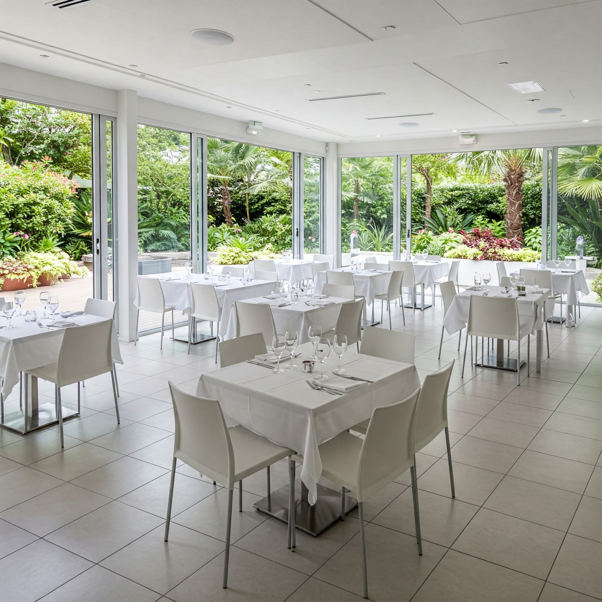
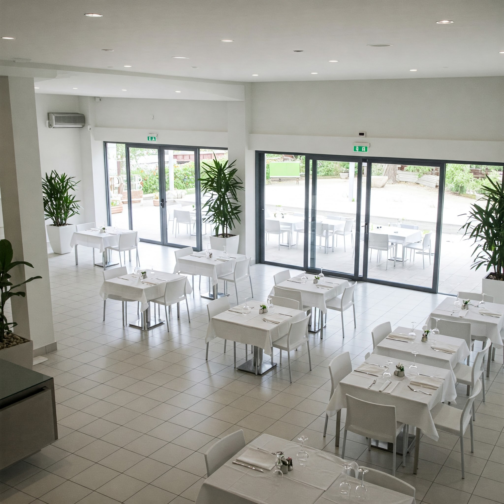
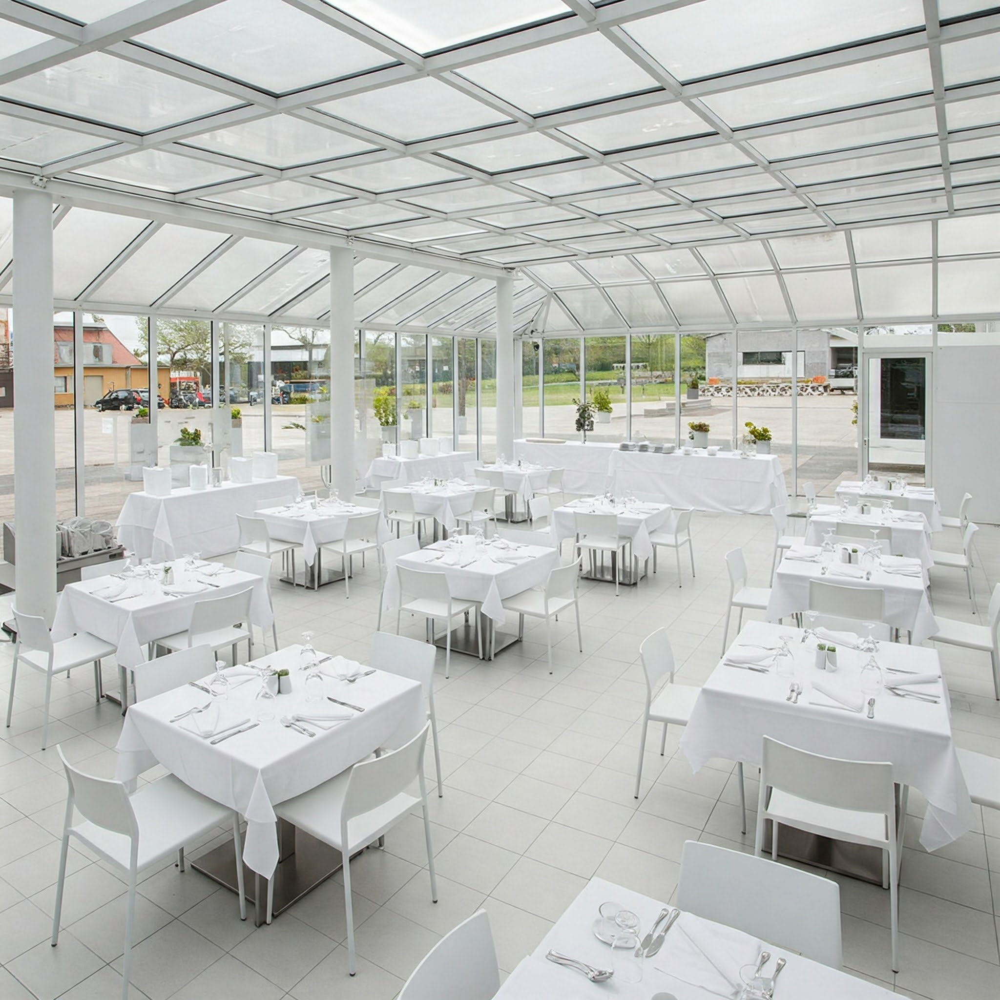

Do café da manhã ao jantar, o lugar certo para todas as horas. Procurando um lugar para um café da manhã reforçado, um almoço rápido e saboroso, um lanche da tarde ou um jantar especial? O Restaurante & Lanchonete 2000 é a escolha certa! Oferecemos um cardápio completo, com opções para todos os gostos e momentos do dia. Venha conferir nossas delícias!



Planeje seu evento conosco!
Nosso restaurante é o local perfeito para celebrar momentos especiais com amigos e familiares.
Faça sua reserva de forma rápida e fácil, entre em contato conosco por telefone
Contamos com espaços versáteis e equipados para receber eventos de diversos portes,
desde aniversários e casamentos até eventos corporativos e confraternizações.
Solicite um orçamento sem compromisso e encontre o espaço ideal para o seu evento!
Reserve Agora!



Nosso Horário de Funcionamento!
Estamos abertos para recebê-lo de segunda a sábado, das 6h às 22h, e aos domingos, das 6h às 17h. Venha desfrutar de uma deliciosa refeição em um ambiente agradável e acolhedor!
Entre em contato conosco por telefone ou WhatsApp para que possamos te atender de forma mais personalizada.
Para reservas, recomendamos que entre em contato com antecedência para garantir a disponibilidade da mesa.
Acompanhe nossas redes sociais para ficar por dentro das novidades e promoções do restaurante.
Estamos esperando por você!